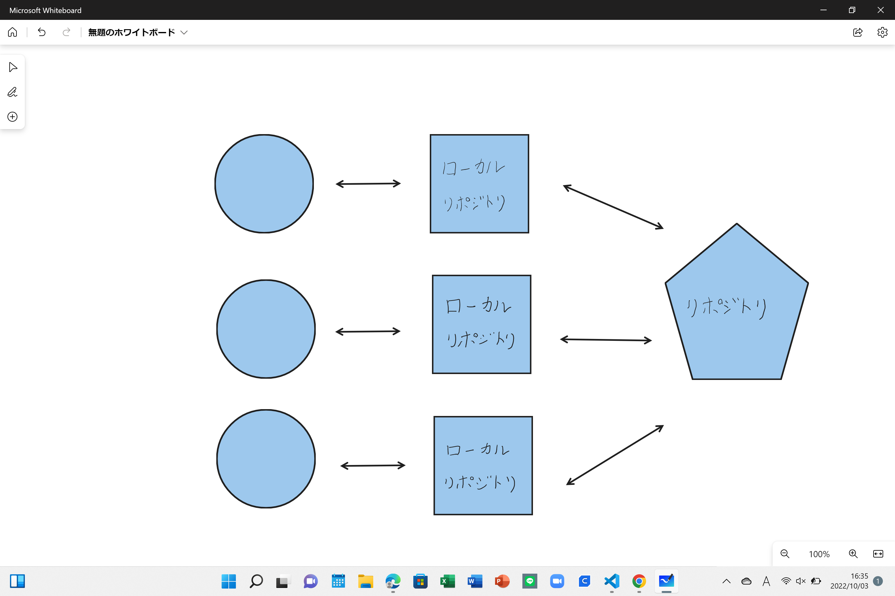

第１回
Gitに関して
Gitとはプログラムのソースコードなどの変更履歴を記録・追跡するための分散型バージョンシステムのことである。
Gitの最大の特徴は「分散型」であり自身のパソコンに全部の変更履歴を含むフォルダーを複製できることである。
また、Gitでできることはファイルの変更履歴を管理、過去のファイルに戻せる、チームで共有することである。
Gitを使う場面はプログラミングやWebデザイン、Webライターなどである。
リポジトリについて
リポジトリとは外来語であり多くのデータや情報などが体系立てて保管されているデータベースを指す

HTMLに関して
HTMLとはハイパーテキスト・マークアップ・ランゲージ（Hyper Text Markup Language）のことで、WEBページを作成するための言語である。
この記述によって、検索エンジンがWEBページの構造を把握しやすくなる。
WEBページに書かれている文字がHTMLであるといってよい。
HTMLにはHTML4とXHTMLとHTML5の3種類がある。
デザイン演習Ⅰ・Ⅱトップページ
XBPトップページ